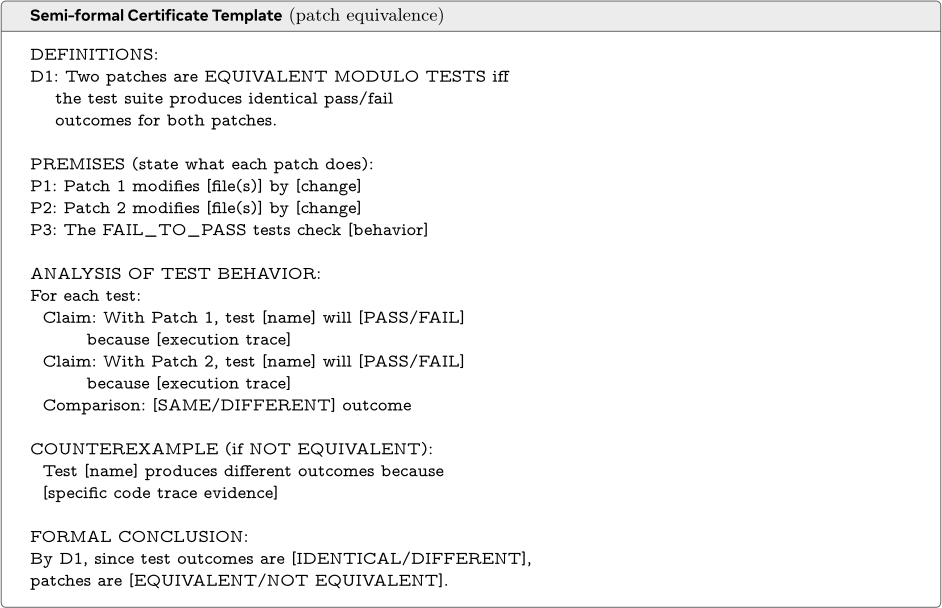
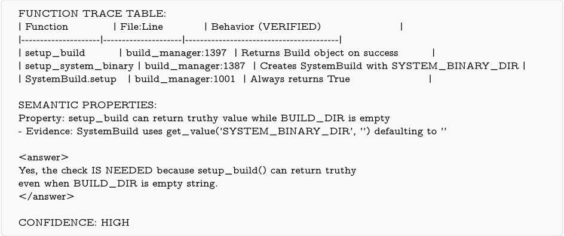

Agentic 代码推理（智能体化代码推理）
论文研究 LLM Agent 能否在不执行代码的前提下探索代码库并完成深层语义推理。方法上提出 semi-formal reasoning：通过任务特定的结构化提示模板，强制 Agent 先陈述显式前提、逐测试追踪执行路径并记录证据（file:line），最后给出形式化结论，使推理过程像'证书'一样不可跳步、不可做无依据断言。在补丁等价验证、缺陷定位与代码问答三个任务上，该方法将 Opus-4.5 的补丁等价准确率从 78.2% 提升到 88.8%（真实 Agent 生成补丁达 93%），代码问答提升 8.7pp 至 87%，Defects4J Top-5 提升约 5-12pp，代价是约 2.8 倍的步数。结论表明结构化 Agent 推理可在免执行条件下支撑 RL 奖励信号、代码审查与静态分析等工程应用。
如何让 LLM Agent 在不执行代码（不装依赖、无沙箱、不跑测试、禁用 git）的情况下探索代码库并完成可靠的语义分析，同时保证 Agent 推理充分而非猜测——即为代码理解建立可验证的 ground truth 与免执行验证机制，以支撑补丁等价验证、缺陷定位、代码问答，以及 RL 训练管线中低成本的免执行奖励信号。
提出 semi-formal reasoning：在 Agent 初始提示中注入任务特定的结构化'证书'模板，强制 Agent 先陈述显式前提、逐测试追踪执行路径、以 file:line 记录可验证证据，最后给出形式化结论。与自由式 CoT 的关键区别是约束推理过程本身而非仅约束输出格式，迫使 Agent 在下结论前收集证据，并自然引导跨函数（interprocedural）推理。实验基于最小化 SWE-agent 设置（bash 工具、最多 100 步、禁止执行仓库代码）。三个任务各有模板：补丁等价（前提-逐测试行为追踪-反例或无反例证明-形式化结论）、缺陷定位（PREMISE→CLAIM→PREDICTION 链，外加 HYPOTHESIS/OBSERVATION 结构化探索格式）、代码问答（函数追踪表、数据流分析、带证据的语义属性、对立假设检验）。
补丁等价验证（curated 数据集 170 例，Opus-4.5）：semi-formal 将准确率从 78.2% 提升至 88.8%（错误约减半），但步数约为标准推理的 2.8 倍；仍有 19 例错误，约一半源于漏判执行差异
真实 Agent 生成补丁验证（200 例，live-swe-agent/gemini-3-pro 补丁对比 gold patch）：Opus-4.5 + semi-formal 在提供 fail-to-pass test patch 时达 93.0% 准确率；单次调用模式为 80-87%
代码问答（RubberDuckBench）：Opus 从 78.3%（standard agentic）提升至 87.0%（+8.7pp）；Sonnet 无进一步增益（85.3% → 84.8%）
缺陷定位（Defects4J 小规模 50 bugs/43 可评）：Top-5 (All) 单次模式 +8pp、agentic 模式 +12pp；agentic + semi-formal 最佳达 Top-5 (All) 72.1%、Top-5 (Any) 88.4%
缺陷定位（100 bugs/90 可评）：semi-formal 较 standard 提升 +5pp Top-5 (All)，验证了结论随数据规模的一致性
区别于三类已有工作：(1) 非结构化 LLM 验证（SWE-RM、Agentic Rubrics、CodeJudge）允许模型对代码行为做无依据断言，本文用结构化证书强制证据先行；(2) 完全形式化验证（Lean/Coq/Datalog）需形式化语言语义，对跨框架多语言的真实仓库不现实，本文保持自然语言但结构化；(3) 事后验证（如将 LLM 输出转 Datalog 检验）作用于输出侧，本文作用于'输入侧'——通过提示模板改进 Agent 被要求执行的推理过程。此外方法通用，无需训练专门模型或形式化语义，模板按任务实例化即可跨任务复用，可作为经典静态分析的灵活替代。
相关度级别：high
命中能力域：3.2 提示工程 | 3.3 Agent 架构与工具使用 | 3.5 评测与可靠使用
理由：直接命中团队多个能力域：semi-formal reasoning 本质是一套可复用的结构化提示模板方法论，属于 3.2 提示工程的核心技术；实验载体是最小 SWE-agent + bash 工具的 Agent loop，核心贡献正是通过提示结构提升单 Agent 在代码任务上的执行可靠性，对应 3.3；三个评测任务（补丁等价、缺陷定位、代码问答）与团队'代码生成与审查、测试辅助、知识库问答'场景高度重合，且免执行验证可直接降低 RL/回归验证的沙箱执行成本，对应 3.5。这是一篇方法可直接移植到团队代码类 Agent 工具的论文。
建议动作：深入精读并做内部分享
arXiv:2603.01896v2 [cs.SE] 2026年3月4日
ShubhamUgare , Satish Chandra
Meta，美国
大语言模型（LLM）智能体能否在不执行代码的情况下探索代码库并对代码语义进行推理？我们研究了这种能力，并将其称为智能体代码推理（agentic code reasoning），同时提出了半形式化推理（semi-formal reasoning）：一种结构化的提示方法学，要求智能体构建明确的前提、追踪执行路径并推导形式化结论。与非结构化的思维链（chain-of-thought, CoT）不同，半形式化推理起到证书的作用：智能体无法跳过任何情形，也无法做出缺乏依据的断言。我们在三项任务（补丁等价性验证、故障定位和代码问答）上进行了评估，结果表明半形式化推理在所有这些任务上都能一致地提升准确率。在补丁等价性方面，准确率在精选样例上从 78% 提升至 88%，在真实场景中由智能体生成的补丁上达到 93%，接近无需执行代码的强化学习（RL）奖励信号所需的可靠性水平。在 RubberDuckBench Mohammad et al. (2026) 上的代码问答任务中，半形式化推理达到 87% 的准确率，比标准智能体推理高出 9 个百分点。在 Defects4J Just et al. (2014) 上的故障定位任务中，半形式化推理将 Top-5 准确率比标准推理提升了 5 个百分点。这些结果表明，结构化的智能体推理能够在不执行代码的情况下实现有意义的代码语义分析，为 RL 训练流水线、代码审查和静态程序分析开辟了实际应用。
大语言模型（LLM）智能体能否在不实际运行补丁的情况下探索代码库，并判断两个补丁是否语义等价？我们研究了这一能力，并将其称为智能体代码推理（agentic code reasoning）：即智能体在不执行代码的前提下，通过导航文件、追踪依赖关系并迭代地收集上下文来执行深度语义分析的能力。在相关上下文横跨多个文件的复杂代码仓库中，这一能力对于缺陷检测、代码审查和补丁验证等任务至关重要。然而，评估智能体的推理是否正确带来了一个根本性挑战：我们如何为代码理解建立真值（ground truth）？我们又如何确保智能体进行彻底的推理而不是凭空猜测？
近期工作已探索了面向代码智能体的免执行验证。SWE-RM Shum et al. (2025) 训练奖励模型来近似测试结果，Agentic Rubrics Raghavendra et al. (2026) 将验证分解为 LLM 生成的评判标准，而 CodeJudge Tong and Zhang (2024) 则直接将 LLM 用作评估器。然而，这些方法采用非结构化推理，使得模型可以在没有明确依据的情况下对代码行为做出断言。在另一个极端，形式化验证方法将代码或推理转换为 Lean Ye et al. (2025); Thakur et al. (2025)、Coq Kasibatla et al. (2025) 或 Datalog Sistla et al. (2025) 等形式化语言，从而实现自动化的证明检查。但完全形式化的方法需要对语言语义进行形式化，这对于跨越多种框架和语言的任意仓库代码而言并不切实际。Sultan et al. Sultan et al. (2026) 强调了这一差距：LLM 能够以具有竞争力的准确率预测终止性等程序性质，却常常无法给出有效的证明。此外，现有方法往往面向特定任务，需要为每个问题领域单独设计架构或进行训练。
我们提出了半形式化推理（semi-formal reasoning），这是一种弥合上述差距的通用方法。我们不是训练专用模型或对语义进行形式化，而是用结构化推理模板对智能体进行提示，要求每项断言都必须提供明确的证据。这些模板充当证书（certificate）：智能体必须陈述前提、追踪相关代码路径，并给出形式化的结论。这种结构化格式自然地鼓励过程间推理（interprocedural reasoning），因为追踪程序路径要求智能体沿着函数调用进行追踪，而不是猜测其行为。
1
任务：这两个补丁是否等价（测试结果相同）？
补丁 1 补丁 2 def y(self): return format( self.data.year, "04d" )[-2:] def y(self): return '%02d' % ( self.data.year % 100 )
图 1 来自 Django 的动机示例（django-13670）：标准推理假设 format() 是 Python 的内建函数；半形式化分析则追踪实际定义，发现了一个具有不同语义的模块级函数，导致补丁 1 抛出 AttributeError。半形式化证明的详细推导过程参见附录 C。
动机示例。图 1 展示了这些技术如何在一个真实的补丁等价性任务（django_django-13670）上协同工作。两个补丁都试图修复公元 1000 年之前年份的两位数年份格式化问题：
补丁 1：return format(self.data.year, "04d")[-2:] 补丁 2：return '%02d' % (self.data.year % 100)
标准推理错误地得出两个补丁等价的结论，其假设 format() 是 Python 的内建函数，且两者产生相同的输出。通过半形式化分析，智能体发现 format 被 Django 的 dateformat.py 中的一个模块级函数所遮蔽，该函数期望的是 datetime 对象而非整数。这导致补丁 1 抛出 AttributeError，而补丁 2 则成功执行。与让模型自由推理的思维链（chain-of-thought, CoT）提示不同，我们的半形式化方法要求填写一个结构化证书模板，其中包含明确的前提、每个测试的执行轨迹以及形式化的结论。这强制保证了完整性，确保智能体无法跳过任何情形或做出缺乏依据的断言，同时仍保持自然语言形式，而无需使用完全形式化的证明语言。
我们在三个任务上对这些技术进行评估，这些任务测试代码推理的不同方面。我们的主要关注点是补丁等价性验证（patch equivalence verification）：给定针对同一规范的两个补丁，它们是否会产生相同的测试结果？该任务通过测试执行提供严格的真值（ground truth），而无需昂贵的人工标注。此外，我们还在代码问答（RubberDuckBench）和故障定位（Defects4J）上进行了评估，这两个任务分别测试细致的语义理解和缺陷查找能力。补丁等价性验证和故障定位受益于稳健且客观的真值（分别为测试执行结果和已知缺陷行），而代码问答则依赖于专家编写的评分准则，由 LLM 评分器进行评估。
2
这为强化学习（RL）训练流程提供了无需执行的反馈。
这些结果表明，LLM Agent 无需执行即可进行有意义的语义代码分析，通过避免昂贵的沙箱执行，有望降低 RL 训练流程中的验证成本。更广泛而言，结构化的智能体式推理或许能为经典静态分析工具提供一种灵活的替代方案：与其将分析逻辑编码在专门的算法中，不如使用可跨语言和框架泛化的任务特定推理模板来提示 LLM Agent。
数据污染。SWE-bench 实例可能出现在 LLM 训练语料库中，这可能会夸大绝对性能数字。然而，我们的主要结论基于使用同一模型进行的相对比较（跨推理格式的消融实验），在这种情况下，数据污染对所有配置的影响是均等的。此外，我们的智能体式设置要求模型在运行时主动探索仓库代码，而非回忆死记硬背的解答。
我们描述实验设置，并定义三个评估任务。
我们区分两类验证方式：单次验证（single-shot verification），即模型基于静态代码快照进行推理；以及智能体验证（agentic verification），即模型可以主动探索代码仓库。我们的工作聚焦于智能体验证，采用一个最小化的 SWE-agent Yang et al. (2024) 设置，并允许访问 bash 工具。在所有实验中，我们将最大步数设为 100。这使得验证器能够浏览代码库、追踪依赖关系，并收集在单次设置下原本无法获得的上下文。至关重要的是，智能体无法执行仓库代码或运行其测试套件：依赖项未安装，环境也未做沙箱隔离。智能体可以运行独立的 Python 脚本来探测一般语言行为（例如，正则表达式如何处理边界情况），但其主要分析方式是静态的。Git 命令也被禁用，以防止调查提交历史。
真正的语义等价性（即判断两个程序在所有有效输入下是否产生完全相同的行为）在一般情况下是不可判定的。现实世界的代码往往缺乏形式化规范，开发者可能持有隐含的假设（例如，字段 self.year: int 应只包含正整数），而大语言模型（LLM）必须从上下文中推断这些假设。为了使这一问题可处理，我们聚焦于补丁等价性（patch equivalence）：给定针对同一任务规范的两个补丁（即修改仓库的代码差异），它们是否会产生相同的测试结果？补丁非常适合这项研究，因为它们自带共享的规范（问题描述）以及定义了预期行为的相关测试套件。
定义 1（模测试的补丁等价，Patch Equivalence Modulo Tests）。当且仅当对两个补丁执行仓库的测试套件（F2P ∪ P2P）产生完全相同的通过/失败结果时，这两个补丁才是模测试等价的。
Defects4J（Just et al., 2014）是一个来自真实世界 Java 项目的可复现缺陷集合，被广泛用于评估故障定位与程序修复技术。每个缺陷都包含代码的有缺陷版本和修复版本，以及至少一个能够暴露该缺陷的失败测试。对于故障定位而言，任务是在仅给定失败测试、且无法访问堆栈跟踪、错误信息或执行信息的条件下，识别出有缺陷代码的确切行。评估采用 Top-N 准确率进行度量：即在所有缺陷中，所有真实缺陷行均被包含在前 N 个预测之内的缺陷所占的百分比。
3
| Term | Definition |
|---|---|
| Code Patch | A diff that modifies repository source code to fix a bug or add functionality. |
| Test Patch | A diff that adds or modifies test files (the F2P tests intro- duced with a bug fix). |
| Fail-to-Pass (F2P) Tests | Tests introduced alongside a bug fix that fail before the patch and pass after. These validate that the fix addresses the reported issue. |
| Pass-to-Pass (P2P) / Regression Tests Correct Patch | Existing tests in the repository that must continue passing after the patch is applied. A patch that causes all F2P tests to pass while not breaking any P2P tests. |
| Term | Definition |
RubberDuckBench（Mohammad et al., 2026）是一个包含 15 个代码理解问题的基准测试（benchmark），这些问题覆盖 Python、Java 和 C++ 代码仓库，每道问题均配有专家撰写的评分细则用于评估。这些问题需要对代码行为有细致入微的理解，包括项目特定的逻辑、库的语义以及边界情况。与补丁等价性任务中真值由测试执行确定不同，代码问答（code QA）需要自由格式的回答，并依据专家评分细则进行评估。
鉴于我们的评估任务，我们需要考虑验证器（verifier）应如何组织其推理。Achim et al. (2025); Hubert et al. (2025); Yang et al. (2025) 等近期针对基于大语言模型（LLM）的数学推理的研究表明，将自然语言直觉与结构化逻辑步骤相结合的半形式化方法，其表现往往优于纯非形式化方法和完全形式化方法。在 Lean 或 Coq 中进行完全形式化验证虽然颇具吸引力，但会引入显著的开销：将任意仓库代码转换为形式化表示并非易事，而且当前的 LLM 仍然难以应对这些系统所要求的精确语法和证明策略。因此，我们比较了两种推理方法，它们通过提示（prompt）中提供的模板，在 agent 的推理中引入程度递增的结构。
标准推理 agent 接收到一个要求其判定等价性的最简提示，其推理不受任何结构约束。它用自然语言解释自己的思考，并以 YES/NO 作结。这种方式速度快，但允许 agent 在不加验证的情况下做出断言。例如，agent 可能注意到某个补丁修改了额外的文件，却只是简单地假设没有测试依赖于这些更改。
半形式化推理 半形式化推理增加了结构：agent 必须陈述明确的前提、逐一追踪每个测试的执行过程，并写出一个形式化的结论。在实践中，我们通过在 agent 的初始提示中加入一个规定了所需格式的结构化模板来强制实现这一点。其关键洞察在于：通过对推理过程本身（而不仅仅是输出格式）加以结构化，我们迫使 agent 在得出结论之前先收集证据，从而避免了无约束推理中常见的过早判断。我们观察到，这迫使 agent 真正地去枚举程序路径而非凭空猜测；当 agent 为了佐证其断言而追踪函数调用时，这自然带来了更深入的跨过程推理。例如，在一个示例（django-13195）中，半形式化推理发现存在与会话（session）相关的测试，并且当某个补丁遗漏了对会话中间件（session middleware）的修改时这些测试将会失败，而非形式化模式则漏掉了这一点。图 1 通过一个具体示例说明了这一点：在追踪一次函数调用时发现了一个被遮蔽的定义（shadowed definition），正是它导致某个补丁失败。
证书模板是任务特定的：对于补丁等价性任务，前提描述每个补丁修改了哪些内容，断言则逐个测试地追踪其行为；对于故障定位任务，前提描述可疑的代码区域，断言则追踪每个区域是否可能导致所观察到的测试失败；对于代码问答任务，模板要求提供函数追踪表、数据流分析以及带有明确证据的语义性质。尽管具体章节因任务而异，但所有模板都遵循同一原则：agent 必须在得出结论之前记录下可验证的证据。图 2 展示了补丁等价性任务的一个精简示例。
4

我们在三个评估任务上展示了实验结果：补丁等价性验证、代码问答和故障定位。
我们按如下方式构建了一个具有挑战性的评估数据集。均匀采样的数据集将主要由易于区分的补丁对构成，为评估细微推理提供的信号有限。为了更好地对验证器进行压力测试，我们刻意筛选出一个更具挑战性、强调细微差异的分布。我们从 SWE-bench-Verified 中获取补丁，利用了社区贡献的 Agent 轨迹、生成的补丁和测试执行结果集合。从该仓库中，我们采样由不同 Agent 针对同一底层缺陷生成的补丁对。
我们的筛选流程如下。我们首先使用基于大语言模型（LLM）的评分（0 到 10 分制）和基于 difflib 的文本相似度，为每一对补丁的表面相似度打分。随后，我们排除测试结果无效的补丁对。最后，我们对数据集进行平衡，使其同时包含两类补丁对：一类是高相似度补丁对，其中的补丁看起来相似
5
（LLM 分数 ≥ 7，difflib > 0.3）但解决状态不同；另一类是两个补丁均通过所有测试的正样本对。最终得到的数据集包含 170 个具有挑战性的样本，旨在探查表面代码相似性与真正语义等价之间的边界。
评估 Agent 的推理是否逐步正确十分困难，因为这需要专家评审。因此，在我们的评估中，我们只关注最终的二元答案。给定两个补丁和一个测试套件，Agent 能否正确预测这两个补丁是否会产生相同的测试结果？这是一项二元任务，随机基线可以达到 50% 的准确率。我们承认，Agent 有时可能通过有缺陷的推理得出正确答案，但我们接下来引入的结构化格式旨在通过要求为每项论断提供明确证据来减少这种情况。
在本节的实验中，验证器可以访问：(1) 两个代码补丁，(2) 应用于代码库的测试补丁，以及 (3) 完整的仓库。验证器无法执行测试，但可以阅读测试实现。
| Reasoning | Overall Accuracy | Avg Steps | Non-Equiv Acc | Equiv Acc |
|---|---|---|---|---|
| Standard | 78.2% | 10.08 | 78.6% | 78.0% |
| Semi-formal | 88.8% | 28.17 | 82.9% | 93.0% |
| Reasoning | Overall Accuracy | Avg Steps | Non-Equiv Acc | Equiv Acc |
半形式化推理将错误减少了近一半，将总体准确率从 78.2% 提高到 88.8%，并且在等价和非等价案例上都表现良好。与非形式化推理相比，这带来了约 10 个百分点的提升，但需要约 2.8 倍的步骤数。即使采用半形式化分析，仍有 19 个案例出错。主要问题（约占一半）是在非等价案例中遗漏了执行差异。当实际上只有一个补丁通过测试时，Agent 却声称补丁是等价的。这种情况通常是因为 Agent 未能追踪所有相关的代码路径，或遗漏了测试中的某些断言。
补丁等价性的一个实际用途是检查大语言模型（LLM）生成的补丁是否与已知的参考解（即 gold patch）相匹配。如果我们无需实际运行测试就能做到这一点，就能为训练流水线提供成本低得多的反馈。我们可以避免搭建执行环境所带来的开销，这种搭建涉及为每个代码仓库运行沙箱或持续集成（CI）系统。
验证器可以访问：(1) 生成的补丁，(2) 参考（gold）补丁，(3) 应用于代码库的测试补丁（即 F2P 测试代码可见），以及 (4) 包含所有 P2P 测试的完整代码仓库。真值（ground truth）由实际测试执行确定。
我们通过将 live-swe-agent（gemini-3-pro）生成的补丁与 SWE-bench-Verified 数据集中的正确补丁进行对比来测试这一点。与上一节中经过精心整理的数据集不同，这里我们进行随机采样：我们选取了一个包含 200 个样本的均衡数据集，正确补丁与错误补丁各占一半（各 100 个）。验证器的任务是检查 Agent 的补丁是否与参考解等价。我们评估了以下验证模式：
6
在所有设置中，准确率均以实际测试执行结果为基准进行计算。Opus-4.5 达到了 93.0% 的准确率
| Model | Mode | Accuracy | Avg Steps |
|---|---|---|---|
| difflib | Best threshold=0.4 | 73% | - |
| Sonnet-4.5 | Single Call (Standard) | 80.0% | 1 |
| Sonnet-4.5 | + File Context (Standard) | 82.0% | 1 |
| Sonnet-4.5 | Agentic (Standard) | 84.5% | 20.67 |
| Sonnet-4.5 | Agentic (Semi-formal) | 91.5% | 43.23 |
| Opus-4.5 | Single Call (Standard) | 86.0% | 1 |
| Opus-4.5 | + File Context (Standard) | 87.5% | 1 |
| Opus-4.5 | Agentic (Standard) | 87.0% | 19.7 |
| Opus-4.5 | Agentic (Semi-formal) | 93.0% | 37.82 |
| Model | Mode | Accuracy | Avg Steps |
——采用半形式化推理并给定 fail-to-pass 测试补丁时。单次调用模式（准确率为 80-87%）证实，许多验证任务需要探索补丁直接上下文之外的代码。
带测试的验证器的错误分析。我们对采用 Semi-formal 的 Opus-4.5 所剩余的错误进行了细致分析，发现了三种主要失败模式：
虽然这些结果表明，当 fail-to-pass 测试补丁可用时验证性能很强，但这种依赖性限制了该方法在缺乏明确定义的测试补丁的场景中的适用性。在下一节中，我们探索将我们的方法扩展到测试补丁不可用的场景。
我们在 Defects4J（见第 2 节）上评估故障定位（fault localization）。与同时提供两个补丁的补丁等价性（patch equivalence）任务不同，故障定位要求 Agent 在庞大的搜索空间中找到相关代码，然后推理其为何会导致测试失败。附录 B 展示了我们用于结构化推理的提示词。
度量指标 在匹配时，我们将预测与有缺陷文件区域（buggy file regions）的重叠情况进行比较：这些区域由补丁中的行构成，按 hunk 分组，删除操作对应 (file, min_deleted, max_deleted) 范围，插入操作对应 (file, insert_pos, insert_pos)。若预测与某区域的范围重叠，即 pred_start ≤ region_end 且 pred_end ≥ region_start，则该预测匹配该区域。这种方法适用于所有补丁类型，包括仅含删除的情况——而基于真实补丁（ground truth patch）中行号的匹配方法在处理这类情况时可能会有问题。我们报告两种变体：All，即只有当每个真实 hunk 都被位置 1..N 内的预测覆盖时，才认为该 bug 在 Top-N 被解决；Any，即至少有一个真实 hunk 被覆盖即可。All 指标更为严格，会对多 hunk 的 bug 造成惩罚；Any 指标则能更好地反映部分定位的成功。
可用信息。Agent 可以访问：(1) 失败测试的名称及其源代码；(2) 范围限定为测试执行期间所加载类的源文件；(3) 完整的代码仓库。不提供任何堆栈跟踪、错误消息或执行信息（以避免使任务变得过于简单）。
小规模评估（50 个 bug）。我们首先在 Defects4J 中所有相关源文件都能放入上下文窗口的 50 个 bug 上进行评估，从而能够在 single-shot（所有代码预先提供）与 agentic（迭代式文件探索）两种模式之间进行比较。我们通过估计已加载类中的 token 数量来实现这一点，并将其上限设为 100K。这些项目中包含 43 个可评估的不同 bug；其余的则因缺少源文件或测试文件，或存在其他错误而无法评估。
7
表 4 Defects4J 上的故障定位准确率（Opus-4.5）。“All”要求覆盖每一个真实 hunk；“Any”只要求至少覆盖一个。
| Mode | Exploration | All.Top-1 | All.Top-3 | All.Top-5 | Any.Top-1 | Any.Top-3 | Any.Top-5 |
|---|---|---|---|---|---|---|---|
| Standard | Single-shot | 36.1% | 55.6% | 55.6% | 47.2% | 69.4% | 69.4% |
| Semi-formal | Single-shot | 41.7% | 58.3% | 63.9% | 55.6% | 75.0% | 77.8% |
| Standard | Agentic | 46.5% | 60.5% | 60.5% | 65.1% | 79.1% | 81.4% |
| Semi-formal | Agentic | 53.5% | 67.4% | 72.1% | 72.1% | 83.7% | 88.4% |
| Mode | Exploration | All.Top-1 | All.Top-3 | All.Top-5 | Any.Top-1 | Any.Top-3 | Any.Top-5 |
Semi-formal 推理在两种指标和两种探索模式下均提升了准确率。在更严格的 All 指标下，Top-5 准确率在 single-shot 模式下提升 +8pp，在 agentic 模式下提升 +12pp。在 Any 指标下，提升幅度相近：single-shot 为 +8pp，agentic 为 +7pp。结合 Semi-formal 推理的 agentic 探索取得了最佳整体准确率：Top-5 (All) 为 72.1%，Top-5 (Any) 为 88.4%。
更大规模验证（100 个 bug）。为了在更大的样本上验证我们的发现，我们在从 14 个 Java 项目中随机采样的 100 个 Defects4J bug 上进行了评估（其中 90 个可评估）。与小规模研究不同，这些 bug 中有许多涉及超出上下文限制的源文件，需要真正的 agentic 探索。标准模式有时能在第 1 轮仅凭测试代码就做出快速且正确的预测（例如 Closure_129，Agent 仅凭测试代码便正确完成预测，而未读取任何源文件）。
表 5 显示，Semi-formal 推理相比标准模式在 Top-5 (All) 上将准确率提升了 +5pp，证实 Semi-formal 推理在不同数据集规模下均始终优于标准模式。要求至少覆盖一个 ground-truth hunk 的 Any 指标也呈现出相同的趋势，且绝对数值更高。
| Model | Mode | All.Top-1 | All.Top-3 | All.Top-5 | Any.Top-1 | Any.Top-3 | Any.Top-5 |
|---|---|---|---|---|---|---|---|
| Sonnet-4.5 | Standard | 20.0% | 30.0% | 31.1% | 35.6% | 51.1% | 51.1% |
| Sonnet-4.5 | Semi-formal | 16.7% | 25.6% | 30.0% | 30.0% | 43.3% | 50.0% |
| Opus-4.5 | Standard | 30.0% | 42.2% | 43.3% | 53.3% | 64.4% | 65.6% |
| Opus-4.5 | Semi-formal | 34.4% | 47.8% | 47.8% | 58.9% | 68.9% | 68.9% |
| Model | Mode | All.Top-1 | All.Top-3 | All.Top-5 | Any.Top-1 | Any.Top-3 | Any.Top-5 |
错误分析。我们分析了采用 Semi-formal 推理的 Opus-4.5 的失败案例，识别出四种主要失败模式：
附录 C 逐步演示了 Semi-formal 推理如何在 mockito_8 案例中提供帮助。
8
我们在 RubberDuckBench 上评估代码问答（code question answering）任务（见第 2 节）。
可用信息。在单次（single-shot）模式下，智能体仅接收包含相关代码的函数（约 20-50 行上下文）。在智能体（agentic）模式下，智能体可以使用 bash 工具探索完整的代码仓库，以读取文件、搜索定义并追踪依赖关系。
评估。由于代码问答需要细致的评判，我们采用基于评分细则（rubric）的多模型大语言模型（LLM）评分。每个答案由 Gemini-3-Pro 和 GPT-5.2 依据专家评分细则独立评分，并通过加权平均处理分歧。两个评分模型在所有评估中达到了 85% 的一致率，表明评估结果具有一致性。
推理模式。我们评估了两种推理方法：
| Model | Mode | Accuracy | Avg Steps |
|---|---|---|---|
| Opus-4.5 | Single-shot | 76.2% | 1 |
| Opus-4.5 | Agentic (Standard) | 78.3% | 10.8 |
| Opus-4.5 | Agentic (Semi-formal) | 87.0% | 19.7 |
| Sonnet-4.5 | Single-shot | 78.7% | 1 |
| Sonnet-4.5 | Agentic (Standard) | 84.2% | 17.6 |
| Sonnet-4.5 | Agentic (Semi-formal) | 84.8% | 25.3 |
| Model | Mode | Accuracy | Avg Steps |
结果表明，结构化的半形式化（semi-formal）推理带来了显著提升：Opus 从 78.3%（标准智能体模式）提升至采用半形式化模板后的 87.0%（+8.7pp）。对于 Sonnet，标准智能体推理已达到 85.3%，半形式化模板未带来进一步提升（84.8%），这表明结构化推理的收益因模型能力而异，当基础模型本身已经很强时可能趋于饱和。对于 Opus，结构化模板迫使智能体在回答前系统地记录证据，纠正了其根据函数名进行猜测的倾向。
结构化模板要求智能体填写函数追踪表（列出每个被检查的函数及其 file:line 位置和已验证的行为）、数据流分析（追踪关键变量如何在代码中流动）、带有明确证据的语义属性，以及备选假设检验。这种结构化格式减少了根据函数名进行猜测的倾向——这是我们在非结构化推理中观察到的一种常见失败模式。
错误分析。结构化模板迫使智能体在得出结论之前系统地记录证据。例如，在一个关于两个 API 调用是否不同的问题（cpp_3）上，标准推理声称“如果以某种方式传入了无效键，它会提供适当的错误处理”——暗示边界情况可能发生。半形式化模板要求同时追踪 map 初始化和变量赋值，揭示出二者使用相同的枚举值，从而证明无效键不可能出现。这一显式验证步骤消除了标准推理中所产生的一个推断。相反，当智能体构建出精细但不完整的推理链时，半形式化推理也可能失败：在 py_5 上，智能体彻底追踪了五个函数，却遗漏了下游代码已经处理了它所识别出的边界情况，从而给出了一个自信但错误的答案。包含完整推理轨迹的详细示例见附录 D。
9
基于大语言模型（LLM）的软件工程智能体。基于 LLM 的编程智能体的出现变革了自动化软件工程。SWE-agent Yang et al. (2024) 引入了一种智能体-计算机接口（agent-computer interface），使 LLM 能够通过专用命令与代码库交互，并在 SWE-bench Jimenez et al. (2024) 上取得了优异的结果。OpenHands Wang et al. (2025) 提供了一个用于构建软件开发智能体的开放平台。Agentless Xia et al. (2024) 则采取了一种不同的方法，将缺陷修复分解为定位与修复两个阶段，且不维护持久的智能体状态。这些系统依赖测试执行来进行验证，而我们的工作旨在通过语义代码推理来减少这种依赖。
免执行的代码验证。与我们工作最为相关的是近期无需执行即可验证代码的各类方法。SWE-RM Shum et al. (2025) 训练了一个奖励模型，为软件工程智能体提供免执行的反馈，表明学习得到的验证器能够逼近测试结果。Agentic Rubrics Raghavendra et al. (2026) 提出将 LLM 生成的评分准则（rubrics）用作上下文验证器，将验证分解为可解释的准则。CodeJudge Tong and Zhang (2024) 探索了 LLM-as-a-judge（以 LLM 作为评判）来评估生成代码的质量。我们方法的不同之处在于强调结构化的半形式化推理以提高验证准确率，在真实世界的补丁上达到了 93% 的准确率。
基于 LLM 的故障定位与代码理解。除补丁验证之外，智能体代码推理还涵盖故障定位与代码理解。AgentFL Qin et al. (2025) 使用 LLM 智能体进行项目级故障定位，而 FlexFL Xu et al. (2025) 则展示了利用开源 LLM 实现有效故障定位。在仓库级代码理解方面，CodePlan Bairi et al. (2023) 将 LLM 与规划相结合以完成多步仓库编辑。RubberDuckBench Mohammad et al. (2026) 提供了一个用于评估 AI 编程助手在代码理解任务上表现的基准测试（benchmark），衡量 LLM 回答有关代码库问题的能力。这些工作凸显了智能体推理在验证之外的代码分析任务中更为广泛的应用价值。
程序等价与形式化验证。程序等价是计算机科学中的一个基本问题，已知其在一般情况下是不可判定的 Rice (1953)。传统方法依赖于翻译验证 Pnueli et al. (1998) 和等价性检查 Necula (2000) 等形式化方法。近期工作探索了使用大语言模型（LLM）进行形式化验证 First et al. (2023)，但将任意代码翻译为形式化规约仍然充满挑战。EquiBench Wei et al. (2025a) 对 LLM 在多种变换类型下关于程序等价的推理进行了基准测试，但其关注的是小型自包含代码对，而非带有测试套件的仓库级补丁。Sultan et al. Sultan et al. (2026) 表明，LLM 能够以惊人的准确度预测程序终止性，在 SV-Comp 基准测试上与专用工具相比具有竞争力，但它们往往无法提供有效的证明。
另一条互补的研究路线关注对 LLM 推理的事后验证 Sistla et al. (2025)，其将 LLM 的响应翻译为 Datalog 事实，并利用静态分析来验证推理步骤，成功验证了关于未初始化变量错误的判断，并捕获了不正确的等价性判断。我们的方法的不同之处在于聚焦于“输入侧”：通过结构化的半形式化推理改进对智能体提出的要求，而非事后对输出进行验证。我们所要求的半形式化证书在设计上比检查完整的智能体轨迹更易于人工验证，尽管它们缺乏完全形式化方法所具备的自动可检验性。这些方法是互补的：结构化推理提升了智能体在分析过程中的周密性，而形式化验证则可以为输出提供额外的保证。
LLM 推理与思维链（Chain-of-Thought, CoT）。我们的半形式化推理方法建立在表明结构化推理能够提升 LLM 性能的相关工作之上。思维链提示 Wei et al. (2022) 证明了中间推理步骤能够改进数学问题求解。ReAct Yao et al. (2023) 将推理与动作相结合以完成智能体任务。CodeAct Wang et al. (2024) 表明可执行的代码动作能够提升智能体性能。我们将这些思想扩展到代码推理中，表明任务特定的结构化模板（要求给出前提、执行轨迹和形式化结论）能够将语义验证准确率提升多达 11 个百分点。
10
训练与扩展软件工程（SWE）智能体。近期的工作聚焦于软件工程智能体的训练流程。SWE-Gym Pan et al. (2025) 提供了一个包含 2,438 个真实世界 Python 任务的训练环境，使得智能体和验证器均可通过强化学习（RL）进行训练。R2E-Gym Jain et al. (2025) 通过程序化环境生成以及结合基于执行和基于大语言模型（LLM）反馈的混合验证器进一步扩展了这一思路，在 89K 个实例上训练智能体。SWE-RL Wei et al. (2025b) 通过在开放软件演化上进行强化学习来提升推理能力，并使用基于 difflib 的相似度作为奖励信号。我们的工作通过提供无需执行的验证来补充这些工作，这种验证有望降低 RL 训练的计算成本。
我们在三项任务上研究了智能体代码推理：补丁等价性验证、代码问答和故障定位。我们的主要发现包括：
这些结果表明，LLM 智能体无需执行即可进行有意义的语义代码分析。结构化推理模板为经典静态分析提供了一种互补方法：我们无需将分析逻辑编码在专用算法中，而是可以用能够跨语言和跨框架泛化的任务特定格式来提示智能体，尽管这不具备传统工具所提供的形式化保证。
未来工作有以下几个方向：
半形式化提示模板。用于补丁等价性验证中半形式化推理的结构化模板要求智能体构建等价或非等价的形式化证明：
前提（说明每个补丁的作用）：
13
P1：补丁 1 通过 [具体修改描述] 修改 [文件] P2：补丁 2 通过 [具体修改描述] 修改 [文件] P3：FAIL_TO_PASS 测试检查 [被测试的特定行为] P4：PASS_TO_PASS 测试检查 [特定行为（如相关）] 测试行为分析：对于 FAIL_TO_PASS 测试：断言 1.1：应用补丁 1 后，测试 [名称] 将 [PASS/FAIL]，因为 [追踪代码行为] 断言 1.2：应用补丁 2 后，测试 [名称] 将 [PASS/FAIL]，因为 [追踪代码行为] 比较：结果为 [SAME/DIFFERENT] 对于 PASS_TO_PASS 测试（若两个补丁可能对其产生不同影响）：断言 2.1：应用补丁 1 后，测试行为为 [描述] 断言 2.2：应用补丁 2 后，测试行为为 [描述] 比较：结果为 [SAME/DIFFERENT] 与现有测试相关的边界情况：（仅分析实际测试所覆盖的边界情况）E1：[现有测试所覆盖的边界情况] - 补丁 1 行为：[特定输出/行为] - 补丁 2 行为：[特定输出/行为] - 测试结果是否相同：[YES/NO] 反例（若声称 NOT EQUIVALENT 则必须提供）：测试 [名称] 在补丁 1 下将 [PASS/FAIL]，因为 [原因] 测试 [名称] 在补丁 2 下将 [FAIL/PASS]，因为 [原因] 因此两个补丁产生不同的测试结果。或者：不存在反例（若声称 EQUIVALENT 则必须提供）：所有现有测试都产生完全相同的结果，因为 [原因] 形式化结论：根据定义 D1：- 补丁 1 下的测试结果：[每个测试的 PASS/FAIL] - 补丁 2 下的测试结果：[每个测试的 PASS/FAIL] - 由于测试结果 [IDENTICAL/DIFFERENT]，两个补丁在现有测试的意义下为 [EQUIVALENT/NOT EQUIVALENT]。答案：[YES/NO]
该模板要求智能体明确陈述关于每个补丁的前提，追踪两个补丁下的测试执行过程，并提供反例（用于非等价情形）或证明不存在反例（用于等价情形）。这种结构化格式确保智能体无法对补丁行为做出没有依据的断言。
示例：半形式化分析发现名称遮蔽（django-13670）。该示例展示了半形式化推理如何检测出表层推理会遗漏的细微缺陷。
14
任务：判断修复年份 < 1000 情况下两位数年份格式的两个补丁是否产生相同的测试结果。
标准答案：NOT EQUIVALENT（补丁 1 调用了错误的格式化函数，导致 AttributeError）
补丁对比 # 补丁 1（失败）：def y(self): return format(self.data.year, "04d")[-2:] # 补丁 2（可行）：def y(self): return '%02d' % (self.data.year % 100)
“两个补丁修复的是同一个 bug。补丁 1 使用 format(self.data.year, '04d')[-2:]，即填充为 4 位数字后取最后 2 位，而补丁 2 使用对 100 取模并填充为 2 位数字。对于年份 476：补丁 1 得到 '0476'[-2:] = '76'，补丁 2 得到 '76'。两者产生完全相同的结果。”
该 Agent 假定 format() 指的是 Python 的内建函数，在这种情况下会产生预期的行为。
半形式化推理（正确）强制要求检查函数定义：
步骤 1：方法定义（从源代码读取）对于补丁 1，方法 y() 调用了 format()。检查模块导入……关键发现：模块级 format 函数（第 340-343 行）：def format(value, format_string): "Convenience function" df = DateFormat(value) return df.format(format_string) 步骤 2：框架语义分析 - 性质 1：模块在第 340 行定义了名为 'format' 的函数 - 性质 2：Python 名称解析：局部 -> 模块 -> 内建 - 性质 3：当 y() 调用 format() 时，Python 会先找到模块级 format()，然后才是内建 format() - 性质 4：模块级 format(value, format_string) 期望 'value' 是一个 datetime/date 对象 - 性质 5：format(476, '04d') 会创建 DateFormat(476) - 性质 6：DateFormat(476).format('04d') 会访问 self.data.day，但 476（int 类型）没有 .day 属性 反例：测试 test_year_before_1000 在补丁 1 下将会失败：- format(476, '04d') -> DateFormat(476).format('04d') - 抛出 AttributeError: 'int' object has no attribute 'day' 测试在补丁 2 下将会通过：- '%02d' % (476 % 100) = '76'（无外部函数调用） 答案：否（两个补丁不等价）
结构化模板要求追踪贯穿每个补丁的执行路径。这促使该 Agent 去检查本地的 format 定义、阅读完整的函数，并推导出传入整数会引发 AttributeError，进而发现 format 被一个模块级函数所遮蔽，而该函数的语义与 Python 的内建函数完全不同。
15
用于故障定位的半形式化模板强制执行一种结构化推理过程，该过程从测试语义出发，经由代码路径追踪至分歧断言。其关键洞察在于 PREMISE → CLAIM → PREDICTION 链：每一个预测都必须能够经由某条分歧断言回溯至一个具体的测试前提。
半形式化提示模板。该 Agent 接收失败测试的名称、测试方法代码、可用源文件列表以及通过测试列表。结构化推理模板要求四个阶段：
...
结构化探索格式。在智能体式探索过程中，每次文件请求和观察都必须遵循结构化格式：
### 请求文件时：HYPOTHESIS H[N]: [你期望找到什么内容，以及为什么该文件可能包含 bug]
16
EVIDENCE: [测试或先前读取的文件中有哪些内容支持该假设] CONFIDENCE: [high/medium/low] ### 读取文件后：OBSERVATIONS from [filename]: O[N]: [关于代码的关键观察，附行号] O[N]: [另一条观察] HYPOTHESIS UPDATE: H[M]: [CONFIRMED | REFUTED | REFINED] - [解释] UNRESOLVED: - [哪些问题尚未得到解答] - [可能还需要检查哪些其他文件/函数] NEXT ACTION RATIONALE: [为什么要读取另一个文件，或者为什么已有足够证据进行预测]
这种结构化格式迫使智能体：(1) 在探索代码之前形成显式假设，(2) 以精确的行号记录观察结果，(3) 基于证据而非直觉更新假设，以及 (4) 为探索过程中的每一步行动提供理由。这种显式的假设跟踪减少了智能体依据函数名进行模式匹配，或对代码行为做出无依据断言的倾向。
Mockito_8 涉及一个由 Java 泛型类型解析中的无限递归导致的 StackOverflowError。该 bug 位于 GenericMetadataSupport.java 中。在处理诸如 SelfRef<T extends SelfRef<T» 这类自引用类型时，第 80 行的 registerTypeVariablesOn 方法会用自引用的 T → T 覆盖原本安全的 T → TypeVarBoundedType(T) 映射，从而导致 getActualTypeArgumentFor 无限递归。真实修复位于第 79 行。
标准推理（错误）预测了 getActualTypeArgumentFor（第 181-189 行），即 StackOverflowError 显现出来的崩溃位置。该智能体仅使用了一轮交互，且全部 3 个预测都针对该递归方法及其直接调用者。推理正确识别出了无限递归，但止步于症状：
“由无限递归导致的 StackOverflowError。当 TypeVariable 在 contextualActualTypeParameters 中映射到自身时，getActualTypeArgumentFor 会在第 185 行无休止地递归。”
半形式化推理（正确）在 Top-1 正确识别出了根本原因。4 阶段模板驱动了跨越 2 轮交互的更彻底调查，从崩溃点回溯至其根本原因。
阶段 1：测试语义分析。智能体建立了关于该测试的形式化前提：
PREMISE T1：测试 typeVariable_of_self_type 所测试的方法，其返回类型是一个引用其自身的类型变量（自引用类型，例如 <T extends Comparable<T>>）。PREMISE T2：基于 GenericsNest 接口，two_type_params() 返回 T，其中 <S, T extends S>。PREMISE T3：该测试会调用 inferFrom(...).resolveGenericReturnType(...) 并对结果进行断言。
这些前提引导智能体关注自引用类型模式，而不是立即将注意力锁定在崩溃位置上。
O1-O3：inferFrom(Type) -> FromClassGenericMetadataSupport -> resolveGenericReturnType(Method) 创建了 TypeVariableReturnType
O4-O5：TypeVariableReturnType 构造函数调用 readTypeParameters() -> registerTypeParametersOn
O6-O8：registerTypeVariableIfNotPresent 存储 boundsOf(typeVariable) —— 对于 <S, T extends S>，T 映射到 TypeVarBoundedType(S)（安全，被包装在 BoundedType 中）
O9-O10：readTypeVariables() 遍历各边界并对每一个调用 registerTypeVariablesOn(type)，随后调用 registerTypeVariablesOn(getActualTypeArgumentFor(typeVariable))
随后，智能体追踪了多个具体类型场景（<S, T extends S>、K extends Comparable<K>、UpperBoundedTypeWithClass<E extends Number & Comparable<E»），并逐一验证它们均能正确工作，从而系统地排除了错误线索。
HYPOTHESIS H1：当 TypeVariable 映射到自身时，getActualTypeArgumentFor 会进入无限递归。证据：第 181-189 行处没有任何环检测。
HYPOTHESIS H2：第 379 行的 readTypeVariables 可能接收到 BoundedType，从而静默跳过必要的注册。
HYPOTHESIS H3：第 405 行的 extractRawTypeOf 对于未注册的 TypeVariable 可能返回 null。
随后，智能体用自引用模式 SelfRef<T extends SelfRef<T>> 对每个假设进行了检验：
步骤 1：registerTypeParametersOn([T]) 存储 T -> TypeVarBoundedType(T)（安全）。步骤 2：readTypeVariables() 处理 T.getBounds() = [SelfRef<T>]，调用 registerTypeVariablesOn(SelfRef<T>)。这是一个 ParameterizedType —— rawType = SelfRef，typeParameters = [T_SelfRef]，actualTypeArguments = [T_current]。但 T_SelfRef 和 T_current 是同一个 TypeVariable！于是 contextualActualTypeParameters.put(T, T) —— 把 T 映射到它自身！这覆盖了已有的 T -> TypeVarBoundedType(T)！步骤 3：getActualTypeArgumentFor(T) 查找 T -> 得到 T（一个 TypeVariable！）-> 递归 -> 无限递归！
智能体验证了对于非自引用的情形（例如 UpperBoundedTypeWithClass<E extends Number & Comparable<E>>）并不会发生这种情况：此时，registerTypeVariablesOn(Comparable<E>) 将 T_Comparable 映射到 E，但 T_Comparable ≠ E（不同的声明），因此 E 已有的 BoundedType 映射得以保留。
阶段 4：排序预测。智能体给出了两个正式论断和 5 个按序排列的预测：
论断 D1：在第 73-81 行，registerTypeVariablesOn 对于自引用类型会用 T -> T 覆盖 T -> TypeVarBoundedType(T)，从而导致无限递归。论断 D2：在第 181-189 行，getActualTypeArgumentFor 没有环检测。排名 1（高）：registerTypeVariablesOn 第 73-81 行 —— 根本原因（第 80 行的覆盖）。[正确] 排名 2（高）：getActualTypeArgumentFor 第 181-189 行 —— 崩溃发生点（备选修复位置）。排名 3（中）：readTypeVariables 第 375-379 行 —— 触发该覆盖的调用方。排名 4（低）：WildCardBoundedType.equals 第 600-606 行 —— 在分析过程中还发现的一个无关缺陷。排名 5（低）：extractRawTypeOf 第 400-406 行 —— 因注册不完整而导致的潜在空指针异常（NPE）。
结构化模板为何重要。如果没有阶段 2 的系统性代码路径追踪，标准模式下的智能体便停在了崩溃发生点，因为 StackOverflowError 正是在 getActualTypeArgumentFor 处显现的，而它也是显而易见的答案。半正式模板迫使智能体追踪完整的注册流水线（O1-O10）、测试多种类型场景、提出相互竞争的假设（H1-H3），并最终发现第 80 行的覆盖才是根本原因，而非那个发生崩溃的递归方法。智能体明确地将 SelfRef<T extends SelfRef<T>> 与 UpperBoundedTypeWithClass<E extends Number & Comparable<E>> 进行了对照测试，以确认为何唯独自引用类型会触发该缺陷——这是一种标准模式从未尝试过的差异分析。
失败案例：自信的错误答案（py_5）。问题："我们是否需要 'if not build_directory' 这个检查？"
20
正确答案是不需要该检查，因为 Runner 的构造函数已经处理了这种情况。然而，半形式化推理（得分 57%）给出了：

| Language | Questions | Accuracy |
|---|---|---|
| C++ | 5 | 88.0% |
| Python | 5 | 87.5% |
| Java | 5 | 85.5% |
| Language | Questions | Accuracy |
该智能体彻底追踪了五个函数，并发现了一个 BUILD_DIR 可能为空的真实边界情况。然而，它遗漏了 Runner 的构造函数同样会检查 build_directory（间接通过 find_fuzzer_path 实现——当 build_directory 为假值时，该函数返回 None，进而触发 CorpusPruningException）。这说明当智能体沿着一条看似合理却不正确的推理链推进、而未验证所有下游代码路径时，更深入的推理反而可能导致更自信的错误答案。
按语言细分。表 7 显示准确率因编程语言而异，其中 Java 问题最具挑战性，因为其依赖于框架特定的语义。
21
1 条证据未在原文中核对到